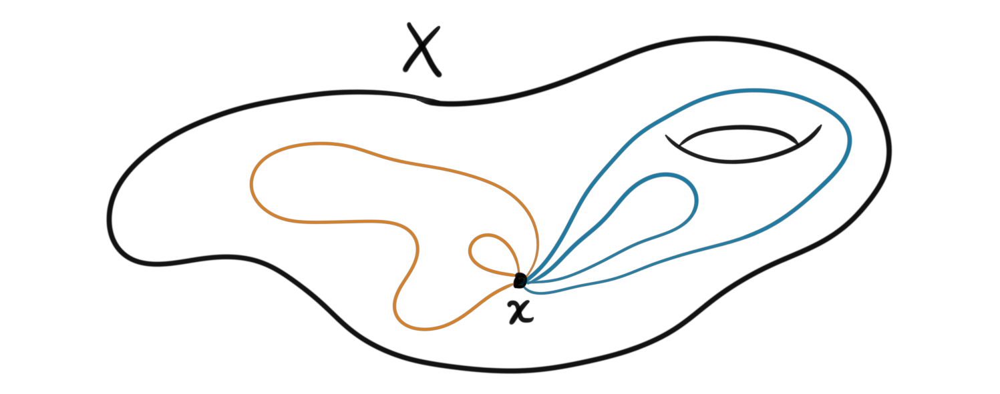
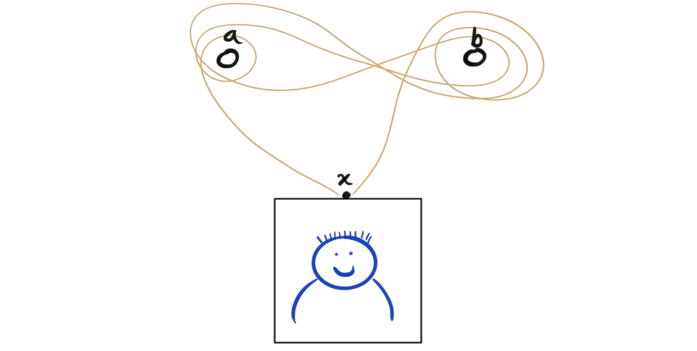
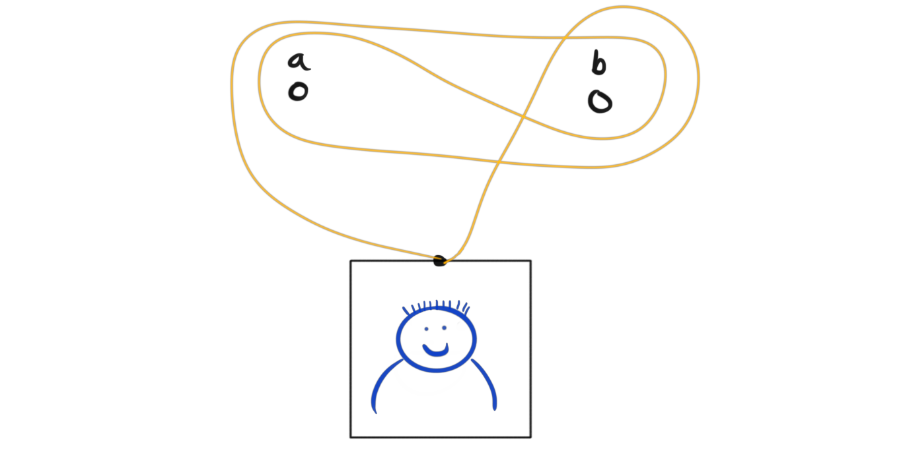

Some time ago I saw this problem of hanging a picture on the wall using a string and two nails in such a way that if you remove one of the nails from the wall, the picture falls down. This is a bad way to hang pictures you immediately say, and I would agree. I saw some solution to the problem, and didn’t think about it for many years, until this week when I figured out that we need homotopy, in particular the fundamental group, to do it! Finally a real world practical useful application of homotopy theory! Take that society.
Anyway. What is this connection between hanging pictures on the wall and homotopy? Well, we are tasked to hang it with a string, and this string together with the picture forms a loop, which gives us a connection to homotopy groups. In particular it gives us a relation to the fundamental group, which is the first and simplest homotopy group. To be rigorous, lets define it properly.
Definition (fundamental group): Let $X$ be a path connected topological space with base point x. The fundamental group of $X$ at the point x, denoted $\pi_1(X,x)$ is the set of loops in $X$ that start and end at $x$, modulo deformation. That means that we say two loops are the same if we can continuously deform them into each other. We define a group operation on this set by the concatenation of loops, i.e. we do one loop and then the other in succession. Since we can do a loop both one way and do the same loop backwards (which for the group inverses) we have a group. The identity element is just the constant loop at the basepoint.

Since we are going to hang the pictures on the wall, this is equivalent to looking at the plane $\mathbb{R}^2$ as our space to do homotopy. When we hammer two nails into the wall, this is the same as punching two holes into our plane, like in the picture below. Lets call these points $a$ and $b$. Then finally the space we are interested in is $\mathbb{R}^2-{a,b}$, i.e. the plane but with the two points removed.

Removing one of the nails correspond to filling one of the holes. If we forget about the requirement described in the introduction, then to hang the picture on the wall we need to twist and turn the string around the two nails in some way. We will soon describe a particular way that meets the requirements, but first, we just look at any way to do this. Choose the basepoint in the space to be where the string is connected to the picture. Since the picture has to actually hang on the wall and not fall down, this must correspond to a non-zero element of the fundamental group $\pi_1(\mathbb{R}^2-{a,b}, x)$, i.e. some loop around the two nails that we can’t “pull away” or equivalently, can’t be deformed to the constant loop. If we could deform it to a constant loop, it would mean that the string really wasn’t well enough put around the two nails, and the picture falls down.

Picture 3: A non-zero element in the homotopy group represented by a way to hang a picture on the wall. We will later call this particular way for $a^2b^{-1}ab^{-2}$, but more on the naming schemes in a little bit.
Ok, so we have figured out that any way to make the picture hang on the wall using the two nails correspond to a non-zero element in the group $\pi_1(\mathbb{R}^2-{a,b}, x)$. Can we describe this group in a more relatable simpler way? It turns out that we can, but not too simple. This description comes from a cool theorem in algebraic topology called the Seifert-van Kampen theorem. This theorem tells us that if we can decompose a space $X$ into two pieces, $U$ and $V$ such that the intersection of these two pieces is contractible and the base point lies in this intersection, then the fundamental group of the entire space is equal to the free product of the fundamental groups of the two pieces, i.e. $\pi_1(X,x) = \pi_1(U,x)\ast \pi_1(V,x)$. What the free product is will be explained soon, but first we need to know what this theorem can do for us? We can split $\mathbb{R}^2-{a,b}$ into two pieces, each one containing just one of the points, and leaving a little overlap.

The basepoint already lies nicely in the intersection, and the intersection is just a infinite tall column, which is contractible. The fundamental group of each of the two pieces we can figure out, since each piece is homeomorphic to $\mathbb{R}^2-{a}$ and $\mathbb{R}^2-{b}$ respectively, which we know retracts to the sircle $S^1$, which have a fundamental group $\pi_1(S^1)=\mathbb{Z}$. Ok, this is maybe a bit heavy and complex looking, but think of it this way. If we were to hang the picture using only one nail, then all we could do was either wind the string around the nail in one direction, or in the opposite direction. Winding it first three times clockwise, then one more time clockwise is the same as winding it four times clockwise, and winding it three times clockwise then one time counterclockwise is the same as winding it just two times clockwise. You can maybe tell that this is the same as counting how many times we wind clockwise and counterclockwise, hence the group is the same as the integers. The identity element is just winding zero times around the nail, hence in our case, this means that the picture falls down.
So what have we learned? We now know that $\pi_1(\mathbb{R}^2-{a}) = \pi_1(\mathbb{R}^2-{b}) = \mathbb{Z}$ and that $\pi_1(\mathbb{R}^2-{a, b}) = \mathbb{Z}\ast \mathbb{Z}$ which is the notation for the free product of the groups. To understand this free product, it will be easier to describe the fundamental groups as the infinite cyclic group generated by one generator, i.e. $\pi_1(\mathbb{R}^2-{a}) = \langle a \rangle$ and $\pi_1(\mathbb{R}^2-{b}) = \langle b \rangle$. For simplicity we denoted the generator by the name of the point in which it represents the fundamental group of. Hence, $b^2$ now means winding two times clockwise around the point $b$, and $a^{-4}$ means winding four times counterclockwise around the point $a$, and so on. The free product is a bit tricky product, but in this situation we have described now, it consists of all finite lists of combinations of $a$ and $b$ where we multiply the $a$‘s and $b$‘s where we can. An example of an element would then be $a^2b^3a^{-6}ba^2b^{-2}$, and all other combinations you could think of. Multiplication of elements is just writing them after each other and contracting the elements that can be contracted. Inverse elements comes from writing the list of elements backwards and replacing all positive degrees with negative and vice versa. So for example, $a^2b^{-3}$ is the inverse of $b^3a^{-2}$ because their multiplication (concatenation of lists) is $a^2b^{-3}b^3a^{-2} = a^2b^0a^{-2} = a^2a^{-2} = a^0 = id$.
Ok, we now have algebraic descriptions of the fundamental groups, and we can use this to describe a way to hang the picture in the way we wanted. To recall the problem, we want to hang a picture on the wall using a string and two nails such that if we remove any of the two nails from the wall, the picture falls down. My guess is the following picture.

In the algebraic language we developed just prior, this would be called $aba^{-1}b^{-1}$. Anyone having done some abstract algebra, or especially some Lie theory would immediately recognize this as the so called commutator of $a$ and $b$. In the free product this commutator is not equal to the identity element, as we can see in the picture and since the group is non-Abelian. In an Abelian group however (like the fundamental group of the plane with just one point removed), all commutators are trivially equal to the identity element, and this is what we will use to make the picture fall down.
So, lets prove that my guess satisfies the requirement. Notice that removing the nail at the point $b$, or equivalently filling the hole b corresponds to a group homomorphism that sends an element of the free product group to the cyclic group on $a$, i.e. a homomorphism $f_a: \langle a\rangle \ast \langle b\rangle \rightarrow \langle a\rangle$ that is the identity on the elements of $\langle a\rangle$ and is the trivial homomorphism that sends everything to the identity on all elements of $\langle b\rangle$. For example,
$$f_a(a^5b^{-3}a^{-3}b^2) = f_a(a^5)f_a(b^{-3})f_a(a^{-3})f_a(b^2)=a^5 \cdot id_a \cdot a^{-3}\cdot id_a = a^5\cdot a^{-3} = a^2.$$
The act of removing the nail at point a corresponds to the exact same construction, just for the group $\langle b\rangle$. Call this map $f_b$. Now, what happens when we use the maps that corresponds to removing nails on the commutator we designed earlier? We get
$$f_a(aba^{-1}b^{-1})=f_a(a)f_a(b)f_a(a^{-1})f_a(b^{-1})) = a\cdot id_a \cdot a^{-1} \cdot id_a = id_a$$
and
$$f_b(aba^{-1}b^{-1})=f_b(a)f_b(b)f_b(a^{-1})f_b(b^{-1})) = id_b\cdot b \cdot id_b \cdot b^{-1} = id_b,$$
and hence, removing any of the nails means that the loop no longer hangs on any of the nails, since for it to hang on one of the nails it has to have been wound around at least one time clockwise or counterclockwise! This is equivalent to saying that the picture falls to the ground, which proves that our guess actually fits the criteria. There are as you may notice very many other ways to do this, but i think the commutator way is the most simple and easiest to visualize. And by that we have successfully made a shitty way to hang a picture on a wall, but, we used homotopy, which makes it cool!